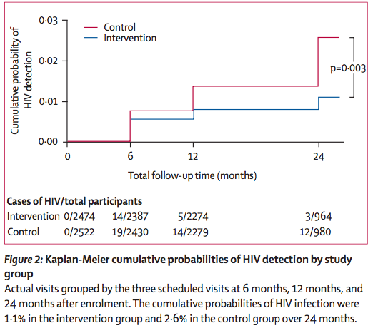
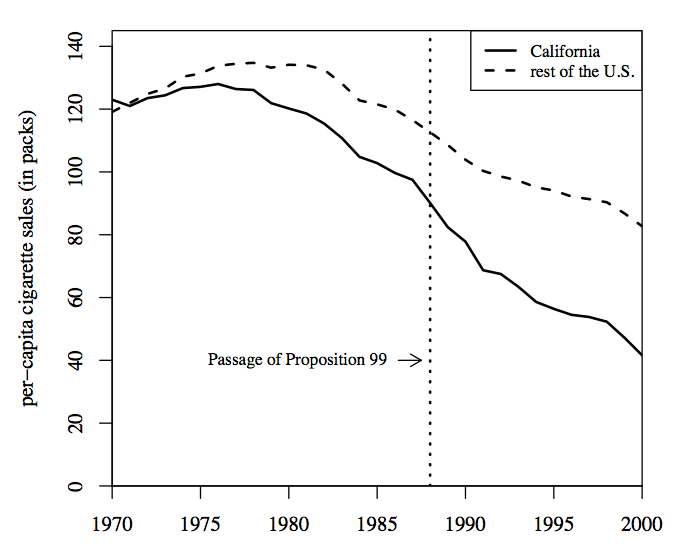
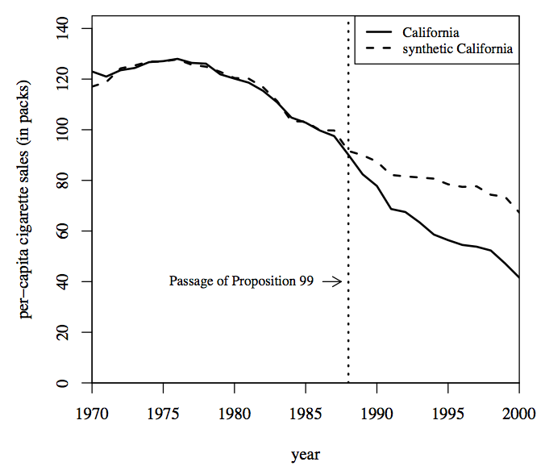
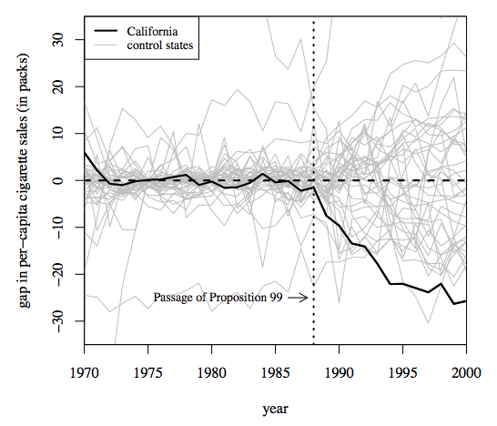

15 Randomized experiments and quasi-experiments
RCTs = randomized control trials = randomized experiments = experiments = random-assignment studies
We use randomized experiments with modifiable exposures after observational evidence suggests an association. Either there’s uncertainty whether the exposure is beneficial. Sometimes experiments are carried out in spite of reasonable certainty of the effect of the exposure in order to establish political support for a policy. For example, abstinence-only sex education was evaluated with a randomized experiment in spite of observational evidence that mostly showed null effects because of the need to settle a political controversy.
As another example, Mexico’s Seguro Popular was evaluated with a randomized experiment because the government wanted to maintain political support for continuing the policy even if elections resulted in a change of administration: they wanted to demonstrate that the program was worth continuing.
Some randomized experiments last for decades (e.g., Head Start, Perry pre-school), but usually the time horizon is shorter.
Sometimes experimental results surprise us by yielding results that are opposite of the observational finding.
Example: CARET study: • Strong observational evidence that vegetable intake reduces cancer. • Analytic chemists may have isolated beta-carotene as active against cancer cells in the lab. • Dietary beta carotene associated with reduced chances of cancer in further observational data. • CARET study of whether beta carotene supplements reduces cancer found that beta carotene supplements increased cancer and mortality. • Uncertain whether beta carotene vitamins are better than placebo. Randomization eliminates systematic differences between groups. On average, groups ran- domized to treatment versus control will not vary on observed or unobserved characteristics. Internal versus external validity RCTs usually draw from self-selected group, not representative of general population. In medicine and epidemiology, usually they are healthier and less likely to be minorities. CARET study began with a larger group all assigned placebo, and then focused on people who had taken at least 50% of the assigned placebo drugs to avoid biasing result due to non- adherence. (Which direction would bias go if the non-adherent were included in sample?)
Few RCTs draw from a nationally representative sample, but some do. Some examples: - Head Start Impact Study: representative of population eligible for Head Start. - RAND Health Insurance Experiment - Medicaid lottery, representative of Medicaid-eligible population in Oregon.
Some programs get applied universally — maximal external validity — before they can be evaluated rigorously. These programs can no longer be evaluated with randomized experiments. • Universal pre-school program in Oklahoma. (See “This American Life” episode 477, “Getting away with it”, originally aired on 10/21/12)
15.0.1 Efficacy vs. effectiveness
Efficacy: does treatment work in ideal conditions?
Effectiveness: does treatment work in the real world?
Intervention studies may include enthusiastic and charismatic staff, so a program may be efficacious in its trial, but not effective once it gets to the real world.
Condom efficacy is high, but effectiveness is slightly lower because people might not use them: “perfect use” versus “typical use.” Efficacy and effectiveness are only occasionally used as distinct. Often people will use terms interchangeably.
15.0.2 Control arm
Participants in the control arm can be assigned to the following conditions: nothing, placebos, another treatment for the condition that is uniform across the control arm, usual care which is not uniform across the control arm.
Placebos aren’t just sugar pills. Placebo ‘treatments’ can include drugs, surgery, or psychotherapy.
15.0.3 Threats to internal validity in RCTs
In other words: what problems could occur that would make us unable to reach causal inference in a randomized experiment? We say that an issue threatens the internal validity of an RCT if it has differential effects across treatment versus control conditions, or between those for whom treatment is effective versus ineffective.
15.0.4 Interference between participants.
We assume that participants’ behaviors are independent of each other. If participants are not independent, then control group might behave as if they got the treatment, or vice-versa. For instance, Anne and Bob are friends, and get randomized to different arms of a randomized trial, we need to make sure that they don’t interfere with the other outcomes. That could happen in an educational intervention, where the intervention is providing information. We might address potential interference by randomizing groups rather than individuals.
Some samples are recruited in ways that cause interference, such as snowball sampling.
15.0.5 Differential non-adherence to assigned treatment
Not all of the treatment group actually took the study medication, or attended the program, etc. The treatment group includes both people who adhered to the treatment + people who didn’t. Treatment participants may have discontinued the drug if it didn’t work.
Control participants may have acquired and used the treatment.
In field experiments, control group participants may lobby to gain access to the treatment. For example in project STAR to evaluate the impact of class size on school outcomes, over 10% of the control group moved to different class sizes than they were assigned to. A nutrition project in Kenya that randomly assigned some schools to get enhanced school lunches prompted parents in the control group schools to raise money to provide similar meals.
Administrators in both the US and Norway have refused to take part in evaluations of job training programs for ethical, professional, or political reasons.
Even for medical trials, people are less likely to agree to join if they are randomized (Kramer and Shapiro 1984, Scientific challenges in the application of randomized trials. Journal of the American Medical Association, 252, 2739–45.)
Solution: Find a politically acceptable alternative Work with the stake-holders to find a politically acceptable way to do a randomized experiment to avoid resistance. Randomize one level below where politicians care, following the example of Seguro Popular. Elimination of study subjects after randomization After randomization, the researchers realize that there is one last exclusion criterion. All exclusion criteria must be applied before randomization is known. If subjects are eliminated after randomization, still need to follow them and record their outcomes to analyze.
15.0.6 Differential attrition
Attrition from experiments is not random. People may leave because the treatment failed for them, or had a bad side-effect. Similar types of attrition as in non-adherence, only difference is that the participants are no longer participating in the trial and thus not measured.
Treatment participants may have left the trial if the drug didn’t work. This differential attrition would bias the results away from the null because the treated people who remained were the ones for whom the treatment worked the best.
Loss-to-followup that’s equal across treatment arms reduces sample size (and thus power) without hurting internal validity. Analysis can establish whether the loss to followup is similar across treatment arms.
Statisticians have methods of correcting for differential attrition, such as principal stratification, described below.
Researchers can also screen beforehand on anticipated adherence
15.0.7 Intention to treat treatment effect
Another solution is to compute intention-to-treat treatment effect. The ITT treatment effect compares the entire treatment group with the entire control group. The difference between the two groups is called the “intention to treat” treatment effect. The intention-to-treat analysis may be more generalizable because it captures the fact that in real life, people don’t use a treatment perfectly. Analogous concept: pregnancy rate with typical use of a contraception method.
Disadvantages of this ITT approach: overly conservative estimates because includes people who did not actually receive the treatment, so decreases power. Doesn’t answer the question about whether the treatment really works for an individual who will definitely complete the treatment. See attached article by Andrew Vickers, “Why Mr. Jones Got Surgery Even If He Didn’t: Intention-to-Treat Analysis” from Medscape.
Solution: Compute treatment effect on the treated using statistical controls We want to know whether the intervention or drug actually works: that is, we want to know the impact of treatment on the treated, not just the impact of the intention to treat. Can’t compare those who actually took the medication with the entire control group: they’re no longer comparable groups. If you can reasonably predict who in the control group would have adhered to the treatment if they had been in the study, you can compare that subset of the control group with the treatment group who actually took the medication. Analogous concept: pregnancy rate with perfect use of a contraception method.
15.0.8 Randomization methods
Simple randomization: assign each participant to treatment versus control.
Blocked randomization: ensure that half of each group goes to treatment versus control.
Stratified randomization: divide participants on one or two important variables (e.g., gender) and randomize the groups separately. Stratified randomization ensures that you have a certain number of people from each group in both treatment and control. NIH regulations in some cases require sufficient numbers of women and minorities.
Blinding/masking: prevent participants from knowing their treatment assignment status.
Double-blind: participants and investigators are unaware of each participant’s treatment assignment.
Factorial: do two trials in one. Factor 1 Yes No Factor 2 Yes No Cross-over designs.
Assign same individual to both treatment and control in random order with a washout period in between. Useful for a short-acting treatment whose effects may abate.
Assign same individual’s body parts to treatment and control: half of rash gets active cream versus placebo cream.
Group randomization: assign entire groups to the intervention versus treatment. e.g., Mexican national health care assigned by regional divisions.
15.0.9 Assessing experimental results
Intent-to-treat: compare groups assigned to treatment versus control, rather than self-selected groups of those who adhered to treatment versus control. Dilutes treatment effect, but more realistic and preserves internal validity.
Subgroup analyses: does treatment work better in one group than another?
Issues: False significance due to multiple comparisons: if attempt many statistical tests, 5% of them are significant at the 95% level just by chance. Second, subgroups must be formed on pre-treatment-assignment variables. Otherwise, the subgroups are intermediate between treatment and outcome, such as compliance status.
Interim analyses: monitor trial progress, so that can stop early. E.g., circumcision in Rakai project reduced HIV infection by 50%.
Additional reading: Cite this: Andrew J. Vickers. Why Mr. Jones Got Surgery Even If He Didn’t: Intention-to-Treat Analysis - Medscape - Aug 17, 2009.
The Beta-Carotene and Retinol Efficacy Trial (CARET) studied 18314 men and women at high risk of developing lung cancer: heavy smokers and people exposed to asbestos. They randomly assigned half the participants to take 30 mg beta-carotene and 25,000 IU vitamin A daily, and half to a placebo. The study ended after 21 months because the group receiving the vitamins had 28% more lung cancers and 17% more deaths. (N Engl J Med. 1996 May 2;334(18):1150-5., J Natl Cancer Inst. 1996 Nov 6;88(21):1550-9.)
| Beta carotene + vitamin A (n=9420) | Placebo (n=8894) | |
|---|---|---|
| Lung cancer cases | 229 | 159 |
| Person-years of follow-up | 38,684 | 34,450 |
| Lung cancer incidence rate (per 1000) | 5.9 (5.2, 6.7) | 4.6 (4.0, 5.4) |
caret-cancer.jpg caret-mortality.jpg
15.0.10 Finnish vitamin E and beta carotene study
Similar results in the Finnish Alpha-Tocopherol Beta-Carotene Cancer Prevention Study, which assigned 29,133 male smokers in Finland to 4 conditions: vitamin E (50 mg per day) alone, beta carotene (20 mg per day) alone, both vitamin E and beta carotene, or placebo. The groups that got beta carotene had 18% higher incidence of lung cancer and 8% higher mortality, primarily from lung cancer and heart disease. (N Engl J Med. 1994 Apr 14;330(15):1029-35.) The increased lung cancer incidence persisted for the first 3 years after the trial ended, but decreased after that (Virtamo J, Pietinen P, Huttunen JK, et al, Incidence of Cancer and Mortality Following \(\alpha\)-Tocopherol and \(\beta\)-Carotene Supplementation: A Postintervention Follow-up, JAMA. 2003;290(4):476-485.)
| Placebo (n=7287) | Vitamin E (n=7286) | Beta Carotene+E (n=7278) | Beta carotene (n=7282) |
|---|---|---|---|
| Lung cancer cases | 209 | 205 | 239 |
| Incidence rate (per 1000) | 4.93 | 4.85 | 5.68 |
| Relative risk (95% CI) | referent | 0.98 (0.81, 1.19) | 1.15 (0.96, 1.38) |
15.1 Rakai study
To evaluate whether circumcision decreases HIV incidence, researchers in Rakai Uganda randomly assigned 5000 HIV-negative men ages 15–49 to be circumcised within 2 weeks of enrollment or to wait 24 months for circumcision. Gray RH, et al. Male circumcision for HIV prevention in men in Rakai, Uganda: a randomised trial. Lancet, Feb 24, 2007. Men with contraindications for circumcision were treated for the contraindications and enrolled after treatment if the con- tradindications resolved. Men with anatomical abnormalities were excluded from trial and referred to urologist for treatment, whch may have included circumcision. Both treatment and control participants received identical compensation: $5 at each screening/enrollment, surgery, and post-surgery visit, and $3 at each of 3 follow-up visits (total compensation $21.)
Participants were randomized using blocks of 20 envelopes that were given to their com- munity, and participants chose one of the 20 envelopes to yield their treatment assignment. Once an envelope was chosen, it was replaced by another envelope from the next block. This randomization method ensured that all communities were balanced in treatment and control assignment status. Here are the demographics of treatment and control groups at baseline. Did randomization succeed in balancing the treatment and control groups?
| Treatment (n=2474) | Control (n=2522) | ||
|---|---|---|---|
| Age (years) | 15-19 | 679 (27%) | 719 (29%) |
| 20-24 | 686 (28%) | 686 (27%) | |
| 25-29 | 440 (18%) | 473 (19%) | |
| 30-49 | 669 (27%) | 643 (25%) | |
| Marital status | Never | 1161 (47%) | 1222 (48%) |
| Currently | 1167 (47%) | 1173 (47%) | |
| Previously | 146 (6%) | 127 (5%) | |
| Religion | Catholic | 1649 (67%) | 1730 (69%) |
| Protestant | 667 (27%) | 629 (25%) | |
| Saved/Pentecostal | 141 (6%) | 146 (6%) | |
| Muslim | 17 (0.7%) | 17 (0.7%) | |
| Education | None | 141 (6%) | 147 (6%) |
| Primary | 1631 (66%) | 1669 (66%) | |
| Secondary | 603 (24%) | 589 (23%) | |
| Post-secondary | 99 (4%) | 116 (5%) | |
| Past year sexual partners | 0 | 468 (19%) | 494 (20%) |
| 1 | 1152 (47%) | 1168 (46%) | |
| 2 | 545 (22%) | 586 (23%) | |
| 3+ | 309 (12%) | 274 (11%) | |
| Past year non-marital partners | No | 1220 (49%) | 1238 (49%) |
| Yes | 1254 (51%) | 1284 (51%) | |
| Past year condom use | None | 978 (40%) | 941 (37%) |
| Inconsistent | 689 (28%) | 732 (29%) | |
| Consistent | 339 (14%) | 355 (14%) | |
| Alcohol use with sex | past 6m | 938 (38%) | 966 (38%) |
| Sex for money/gifts | any | 38 (2%) | 36 (1%) |
| Prior voluntary counselling/testing | any | 648 (26%) | 574 (23%) |
| Self-reported STI symptoms | Genital ulcer disease | 179 (7%) | 176 (7%) |
| Urethral discharge | 85 (3%) | 94 (4%) | |
| Dysuria | 138 (6%) | 162 (6%) |
Participants were tested for HIV at 6 month intervals during the trial. All HIV-positive screenees and participants were treated for HIV using Pepfar funds (Pres. George W Bush’s Presidential Emergency Fund for AIDS Relief). Here are the results:
| Treatment | Control | IRR (95% CI) | p-value | |
|---|---|---|---|---|
| 0–6 mos | No. participants | 2263 | 2319 | |
| Incident HIV infections | 14 | 19 | ||
| Person-years | 1172 | 1207 | ||
| Incidence per 100 p-y | 1.19 | 1.58 | 0.76 (0.35, 1.60) | |
| 6–12 mos | No. participants | 2235 | 2229 | |
| Incident HIV infections | 5 | 14 | ||
| Person-years | 1191 | 1176 | ||
| Incidence per 100 p-y | 0.42 | 1.19 | 0.35 (0.10, 1.04) | |
| 12–24 mos | No. participants | 964 | 980 | |
| Incident HIV infections | 3 | 12 | ||
| Person-years | 990 | 1009 | ||
| Incidence per 100 p-y | 0.30 | 1.19 | 0.25 (0.05, 0.94) | |
| Total 0–24 mos | No. participants | 2387 | 2430 | |
| Incident HIV infections | 22 | 45 | ||
| Person-years | 3352 | 3392 | ||
| Incidence per 100 p-y | 0.66 | 1.33 | 0.49 (0.28, 0.84) |
The researchers also estimated incidence rate ratios within each of the baseline factors. The IRR was signficicant at the 0.05 level with those with no or primary education, 2+ sexual partners, non-marital sex partners, inconsistent condom use (but not no condom use), those who did not use alcohol with sex, both those who engaged and did not engage in transactional sex, those w/o uretrhral discharge, and those w/o dysuria.

15.3 Quasi experimental designs
15.3.1 Instrumental variables
15.3.2 Regression discontinuity
Regression discontinuity studies can evaluate programs where eligibility is determined by a cut-off value: people below the cut-off value do not qualify, and people above the cut-off value qualify. They compare people who are just below the cut-off value with those just above because cut-off points can be arbitrary. The following image3 shows four different outcomes of a regression discontinuity study where the outcome is continuous: (a) linear relationship with no treatment effect; (b) linear regression with treatment effect; (c) curvilinear relationship with no treatment effect; (d) linear relationship with treatment effect between 3 conditions. Ariel Linden, John L. Adams, Nancy Roberts. Evaluating disease management programme effectiveness: an introduction to the regression discontinuity design. Journal of Evaluation in Clinical Practice. 2006;12(2):124– 131.
Similar analyses could be done with regression discontinuity design with dichotomous outcome. Regression discontinuity designs avoid the following threats to internal validity that are often present in observational studies: selection bias, maturation, and regression to the mean. Explain why these threats to internal validity would apply in many observational studies. Would they apply in a regression discontinuity design?
Regression to the mean: see this illustration of health care costs for two consecutive years for continuously insured patients: coronary artery disease (CAD), congestive heart failure (CHF), and chronic obstructive pulmonary disease (COPD). Costs are quintiles numbered I (lowest cost) to V (highest cost).
15.3.2.1 Example: Disease management programs
Disease management programs target individuals with health problems that can be dangerous and costly if uncontrolled, and give them additional counseling: e.g., pregnant women at risk for birth complications, people with diabetes and hypertension. Frequently, disease management programs are evaluated with a pre-post design with no control groups: researchers compare costs before versus after the disease management program was implemented. Disease management programs are often designed to admit people according to their results on medical test(s) with continuous or ordinal results — HbA1c or blood glucose (diabetes), blood pressure, cholesterol/lipids (coronary heart disease), ejection fraction (congestive heart failure), peak flow or forced expiratory volume (asthma) — so they are appropriate for regression discontinuity design evaluations.4 4Ariel Linden, John L. Adams, Nancy Roberts. Evaluating disease management programme effectiveness: an introduction to the regression discontinuity design. Journal of Evaluation in Clinical Practice. 2006;12(2):124– 131.
15.3.2.2 Example: Medicaid expansion
The State Children’s Health Insurance Program expanded Medicaid to cover many more chil- dren. Researchers used regression discontinuity study by birthdate to evaluate later life health problems. Laura R Wherry, Sarah Miller, Robert Kaestner, Bruce D Meyer, Childhood Medicaid Coverage and Later Life Health Care Utilization. NBER Working Paper No. 20929 Issued in February 2015, Revised in October 2015. http://www.nber.org/papers/w20929 Many more Black children became eligible for SCHIP after the implementation:
What do you notice about Medicaid receipt in 1992–96 and hospitalizations and hospital costs in 2009? (Caption: “Authors’ calculations from the National Health Interview Survey, 1992–1996. Cohorts born in 1983 are between the ages of 8 and 13 in these figures. The trend is estimated using children between the ages of 4 and 17.”)
15.3.2.3 Example: Abortion gestational age limits
First trimester abortion: n=273
Less than 2 weeks within the limit (eligible for abortion): n=452
No abortion: more than 3 w post-limit n=231
At baseline, women who got abortions were equally likely to receive public assistance as women denied abortions (45%), but one year later, women denied abortions were more likely to receive public assistance (76%) than women who had abortions (44%). At baseline, the same number had household incomes below the federal poverty line (66%); one year later, women who got abortions were less likely to be below the federal poverty line (56%) than women who were denied abortions (67%) At baseline, 45% received public assistance, two thirds had household incomes below the federal poverty level (FPL) and the average household size was 3.7. One year later, 86% of women denied an abortion were living with the baby; 11% had placed the baby for adoption. Women denied abortion were more likely to be receiving public assistance (76% vs. 44%) and have household income below the FPL (67% vs. 56%) than women who received an abortion. The proportion of women denied an abortion who were working full time was lower than among women who received an abortion (48% vs. 58%). “Turnaways who ultimately gave birth increased use of drugs other than marijuana compared to women in the Near Limit Abortion Group (p=.041), who did not increase use.” (Roberts SC, Rocca CH, Foster DG. Receiving versus being denied an abortion and subsequent drug use. Drug Alcohol Depend. 2013 Sep 23.)
15.3.2.4 Example: Drinking age impact on mortality
(Carpenter and Dobkin, The Effect of Alcohol Consumption on Mortality: Regression Discontinuity Evidence from the Minimum Drinking Age, American Economic Journal: Applied Economics 2009, 1:1, 164–182. Carpenter and Dobkin, The Minimum Legal Drinking Age and Public Health, JEP 2011)
15.3.3 Interrupted time series
Example: Marijuana legalization and police stops Christopher Ingraham, Legalized marijuana is making it harder for police to search your car, June 26, 2017, Washington Post Wonkblog, https://www.washingtonpost.com/amphtml/news/wonk/wp/2017/06/26/legalized-marijuana-is-making-it-harder-for-poli based on data from Stanford Open Policing Project, https://openpolicing.stanford.edu/findings/ Similar decreases were not seen in states that did not legalize marijuana.
15.3.4 Differences in differences
Instruments and sudden discontinuities aren’t always available to answer a research question. When they aren’t, analysis of natural experiments uses a differences-in-differences framework. Often, when people use the term “quasi-experiment”, they mean differences-in-differences. The classic book Quasi-Experimentation: Design & Analysis Issues for Field Settings by Thomas Cook and Donald Campbell (1979) uses the notation X to refer to an intervention and Oi to refer to an observation at time i. The subscript can be omitted if there is only one. The simplest form of a differences-in-differences study is a pre-post study with control group.
Using Cook and Campbell’s notation, a pre-post with control study would look like this: O1 X O2 O1 O2 Or there may be multiple pre- and/or post- observations: Pre T1 Pre T2 …. Post T1 Post T2 Post T3 …. Treatment Control O1 O2 X O3 O4 O5 O1 O2 O3 O4 O5 Ideally, the pre-treatment observations for the treatment and control groups line up, and diverge after the treatment. When the pre-treatment observations do not line up, the synthetic matching method can be used. Example: Minimum wage and unemployment In April 1992, NJ increased its minimum wage from $4.25 to $5.05, and PA did not change its minimum wage. Card and Krueger compared employment and other outcomes at fast-food restaurants in New Jersey and eastern Pennsylvania (across the Delaware River from NJ) before versus after the increase: in February and November 1992.5 Their data came from a telephone survey of 410 fast-food restaurants listed in the telephone white pages in February 1992. They found no decrease in employment and no increase in meal costs, suggesting that moderate increases in the minimum wage does not have a negative economic impact on consumers or restaurant employees. 5David Card and Alan Kreuger, Minimum Wages and Employment: A Case Study of the Fast Food Industry in New Jersey and Pennsylvania, AER, September 1994.
Neumark and Wascher 2000 did a similar analysis using payroll data and contend that NJ’s minimum wage increase resulted in declining employment. They claimed that the telephone survey data used in Card and Krueger caused errors.6 After the 1996 federal minimum wage increase to $4.75, which affected PA but not NJ, Card and Krueger updated their study using the Neumark and Wascher data. They also tested the sensitivity of their model to specifications, such as which regions of Pennsylvania .7 6Neumark, David, and William Wascher. 2000. Minimum Wages and Employment: A Case Study of the Fast-Food Industry in New Jersey and Pennsylvania: Comment. American Economic Review, 90(5): 1362-1396. 7Card, David, and Alan B. Krueger. 2000. Minimum Wages and Employment: A Case Study of the Fast-Food Industry in New Jersey and Pennsylvania: Reply. American Economic Review, 90(5): 1397-1420.
15.3.4.2 Example: School desegregation
In 1952, US states took 4 stances towards racial segregation in schools: 17 states mandated racial segregation, 4 states allowed segregation, 16 states banned racial segregation, and 11 states had no law on the topic. After the 1954 case, Brown vs. Board of Ed, court orders to desegregate schools occurred in 1057 school districts on varying dates between 1954 and 1980. Legislation in 1964 (Civil Rights Act) and 1965 (Elementary & Secondary Education Act) spurred desegregation. The timing of the court orders can be considered arbitrary/random. Children attended desegregated schools for varying numbers of years: if their local school district desegregated after they were age 17, they were assumed to have attended segregated schools. Rucker computed various outcomes by number of years of desegregation.
15.3.5 Synthetic matching
Many times, a political unit will attempt a policy innovation that has never been tried elsewhere: e.g., Colorado and later Washington State legalizing marijuana, Oregon making pseudoephedrine only available by prescription to prevent methamphetamine manufacture (precursor laws). Researchers attempt to study these innovations with pre-post studies without control, but these studies are inconclusive.
A Abadie, A Diamond, J Hainmueller. Synthetic control methods for comparative case studies: Estimating the effect of California’s Tobacco Control Program. Journal of the American Statistical Association. 2010; 105 (490), 493-505
Synthetic matching is an attempt to add rigor to a differences in differences framework to allow causal inference from these situations. Abadie evaluated the impact of California’s Proposition 99 tobacco control program on smokingprevalence.8 Proposition99 increased cigarette taxes by 25 cents to fund antismoking projects and media campaigns, funded tobaco-related research, and triggered 140 clean air laws between 1989 and 2000 that banned smoking in workplaces, so that by 1994 more than 90% of workers were covered. Smoking rates and per capita cigarette smoking decreased.
Without synthetic matching, the effects of the tobacco control initiative are unclear. How much of the decrease in smoking is attributable to Proposition 99?

It’s impossible to know in a pre-post study.
However, the synthetic control method offers a way forward. State were included for synthetic California if they did not have statewide anti-tobacco laws (excludes MA, FL, AZ, OR) or tobacco tax increases greater than 50 cents from 1989–2000 (excludes AK, HI, MD, MI, NJ, NY, WA), so they considered 38 remaining states. Their outcome was cigarette packs sold per capita, which is available from state tax data and doesn’t rely on self-report. They matched on the following predictors of smoking prevalence averaged over 1980–88: average retail price of cigarettes, per capita state personal income (logged), the percentage of the population age 15–24, and per capita beer consumption. They also included smoking consumption in 1975, 1980, and 1988, prior to prop 99. Synthetic California is a combination of Colorado (0.164), Connecticut (0.069), Montana (0.199), Nevada (0.234), and Utah (0.334). This table compares synthetic and actual California on the matching variables.
| Real California | Synthetic California | Average of 38 control states | ||
|---|---|---|---|---|
| Log (GDP per capita) (1980–88) | 10.08 | 9.86 | 9.86 | |
| Percent ages 15–24 (1980–88) | 17.40 | 17.40 | 17.29 | |
| Retail price pack of cigarettes (1980–88) | 89.42 | 89.42 | 87.27 | |
| Beer consumption per capita (1984–88) | 24.28 | 24.20 | 23.75 | |
| Cigarette sales packs per capita 1988 | 90.10 | 91.62 | 114.20 | |
| Cigarette sales packs per capita 1980 | 120.20 | 120.43 | 136.58 | |
| Cigarette sales packs per capita 1975 | 127.10 | 126.99 | 132.81 |

To make sure that they didn’t just choose outliers, they also compared the gap between synthetic California with actual California, with the gap between synthetic California and all 38 control states.

15.4 Exercise
This exercise is based on the paper Ornstein KA, et al. “The Use of Life-Sustaining Procedures in the Last Month of Life Is Associated With More Depressive Symptoms in Surviving Spouses.” J Pain and Symptom Management. 2017;53(2):178–187.
What kind of data does the study use?
What is the research question?
What is the primary predictor of interest in this study? Define it briefly. If categorical or dichotomous, list the categories of the variable.
Which are the primary outcome(s) in this study?
Looking at the first 3 columns of Table 3, identify some potential confounders of the relationship between the predictor and the outcome(s)? Explain in detail how these variables could cause a spurious connection between receiving life-sustaining procedures and depressive symptoms in surviving spouses.
Does matching balance the two groups: those who received life-sustaining procedures with those who did not?
Do you think that the relationship is causal? Take a stance and support it.
15.2 Social experiments
15.2.1 First social experiment: New Jersey Income Maintenance Experiment
Tested guaranteed minimum income (negative income tax) in 1967: 1375 families in 4 NJ cities (Paterson, Jersey City, Trenton, and Passaic) with the addition of Scranton, PA to increase the representation of white families.
15.2.2 RAND Health Insurance Experiment
RAND Health Insurance Experiment (RAND HIE, 1974–82): 7700 participants in 6 sites in the US assigned to 0% (free), 25%, 50%, and 95% coinsurance, and non-profit HMO with no coinsurance. Out of pocket expenditure capped as percentage of income (5, 10, 15%) or equivalent of $3800 today, whichever was lower. Cost-sharing and HMO predicted lower chance of initiating treatment than with no coinsurance. (Joseph P. Newhouse and the Insurance Experiment Group. Free for All? Lessons from the RAND Health Experiment. Cambridge, Mass.: Harvard University Press, 1993. Also http://www.rand.org/pubs/research briefs/RB9174/index1.html)
15.2.3 Seguro Popular de Salud: the Mexican universal health care system
The Mexican government implemented their 2005 universal health care system such that it could be tested with randomized experiment: 7100 health clusters (health facility cachement areas) in 13 states were identified, and researchers identified 74 matched pairs of clusters that included 119,000 households.
King, Gary, Gakidou, Emmanuela, Imai, Kosuke, et al. 2009. Public Policy for the Poor? A Randomised Assessment of the Mexican Universal Health Insurance Programme. The Lancet 373: 1447-1454. Copy at http://j.mp/lgZF4R, King, Gary, et al. 2007. A “Politically Robust” Experimental Design for Public Policy Evaluation, with Application to the Mexican Universal Health Insurance Program. Journal of Policy Analysis and Management 26: 479-506. Copy at http://j.mp/lXnta2
15.2.4 Oregon Health Study
Oregon closed its Medicaid rolls in 2004 due to lack of funding, but it was later able to extend Medicaid, so held a lottery in 2008.
Question: What should the treatment group be? The 30,000 people given applications, the people who submitted the application, or the 8704 who actually enrolled in Medicaid? K Baicker et al, The Oregon Experiment — Effects of Medicaid on Clinical Outcomes. N Engl J Med 2013; 368:1713–1722.
15.2.5 Moving to Opportunity
Low-poverty area vouchers and assistance (n=1788) Housing vouchers alone (n=1312) Control group (n=1398)
Findings: - Children who moved to low-poverty neighborhoods had better mental and physical health than either control group. (Soc Sci Med. 2011 Sep;73(5):737-43.).
10 years later, obesity and diabetes were less common among the parents who moved to the low-poverty neighborhoods. (N Engl J Med. 2011 Oct 20;365(16):1509-19.)
10–15 years later, subjective well-being was higher among families who moved to the low-poverty neighborhoods (Science. 2012 Sep 21;337(6101):1505-10.)
Children who moved to low-poverty neighborhoods had less exposure to danger, especially girls (Soc Sci Res. 2012 Jul;41(4):788-801.)
Several studies found better outcomes for girls and worse outcomes for boys. One study found both boys and girls who moved to low-poverty neighborhoods had lower grades and school engagement after 5 years (Dev Psychol. 2005 Nov;41(6):933-52). J Ludwig et al, Neighborhoods, Obesity, and Diabetes — A Randomized Social Experiment, N Engl J Med. 2011 Oct 20;365(16):1509–19.
15.2.6 Post-diction and coincidences
RCTs need to establish their hypotheses before they are tested, or else they engage in “post- diction” and could be finding significant findings due to multiple comparisons. Postdiction is the scientific equivalent of coincidences. Many coincidences that seem im- probable are not that improbable. My first two boyfriends had birthdays within 2 days of each other, in different years, which sounds unlikely, but the probability of that event (two people having birthdays within 2 days of each other) is 5/365, or about 1.4%. It’s unlikely but not that unlikely. See Radio Lab and This American Life for coincidence stories. My favorite: a person asks his friend to email him a picture, and she sends a picture of herself as a 4 year old child at a tourist attraction; he notices his grandmother in the background of the photo. Another: an engaged couple discovers that her mother had been engaged to his deceased father in Korea. https://www.thisamericanlife.org/radio-archives/episode/489/transcript
15.2.7 False significance due to multiple comparisons
Illustrated by this comic: https://xkcd.com/882/
15.2.8 Publication bias
RCTs are the best way to learn about cause and effect, but does studying the published liter- ature of RCTs teach you whether a RCT works? E. J. Masicampoa & Daniel R. Lalande, A peculiar prevalence of p values just below .05, The Quarterly Journal of Experimental Psychology, Volume 65, Issue 11, 2012. (Histogram from http://normaldeviate.wordpress.com)
The International Committee of Medical Journal Editors and FDA required all clinical trials to be registered beforehand, to ensure that even negative results would be known. To reduce publication bias, clinical trial registries were developed to require all clinical trials to register prior to their starts, and to report all results within a year. Prayle, Hurley, Smyth, Compliance with mandatory reporting of clinical trial results on ClinicalTrials.gov: cross sectional study, BMJ 2012; 344
(Source: BMJ 2012;344:d7373) A more recent study found trial registration increased with time, but was still below 50%. Anderson ML, Chiswell K, Peterson ED, Tasneem A, Topping J, Califf RM. Compliance with results reporting at ClinicalTrials.gov.N Engl J Med. 2015 Mar 12;372(11):1031-9. doi: 10.1056/NEJMsa1409364.
15.2.9 A study designed to be misleading: Chocolate for dieting RCT
A paper with the following abstract was published in the International Archives of Medicine and featured in the popular press (see the attached xerox from Shape magazine, June 2015: “Why you must eat Chocolate Daily.”) The full study is available here: http://www.scribd.com/doc/266969860/Chocolate-causes-weight-loss
The study was a real study, but it was designed to be intentionally biased away from the null. http://io9.com/i-fooled-millions-into-thinking-chocolate-helps-weight-1707251800 What clues can you find that the study is biased away from the null?